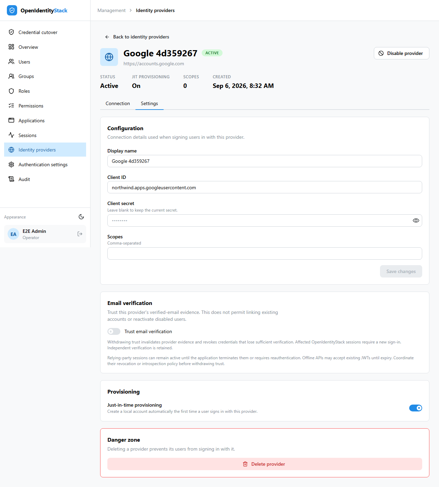
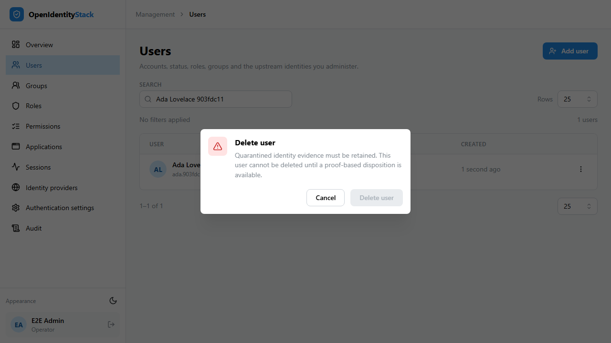
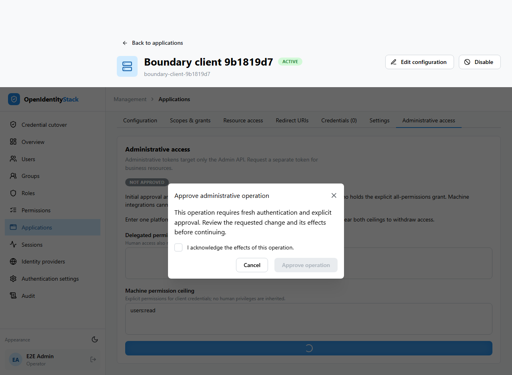

Identity boundary implementation evidence¶
The twelve tickets implementing ADR 0005 are delivered as dependent pull requests in GitHub stack 458. They address the accepted identity and privilege boundaries; this is implementation evidence, not a new standards scan or formal OIDC certification. This page records historical verification at the named revisions, not verification of the current tree. On 8 September 2026, the pre-release credential cutover feature was removed under the amended ADR 0005 decision; its historical implementation and test results below are superseded and are not release prerequisites.
Delivered behavior¶
| Ticket | Implemented boundary |
|---|---|
| 445 | Reject email collisions and identifier-only linking; commit new federation associations and their audit atomically; translate expected concurrent identity conflicts to generic audited denial. |
| 446 | Preserve local disablement through federation, cookies, token issuance and create-only bootstrap. |
| 447 | Bind links to the exact validated issuer; freeze the provider identity configuration after linking. |
| 448 | Retain and inventory unproven legacy associations as quarantined evidence; block authentication and ordinary unlinking. |
| 449 | Derive verified email from explicit provider trust and current-address provenance, independently of activation. |
| 450 | Require fresh human approval, acknowledgement and audit for explicit unrestricted grants; reject stale authority mutations atomically. Role names convey no authority. |
| 451 | Use explicit resources, scopes, namespaces and client ceilings; intersect delegated subject authority with the client grant. |
| 452 | Require the dedicated administrative audience and client entitlement; guard client approval, expansion and takeover paths, including concurrent enablement. |
| 453 | Evaluate current persisted administrative authority on each request and audit authority mutations in the committing transaction. |
| 454 | Withdraw provider-derived verification and invalidate affected credentials while preserving independent verification. |
| 455 | Superseded: global credential epoch and cutover removed before first release. |
| 456 | Superseded: cutover readiness, UI, and rehearsal removed before first release. |
Initial verification¶
The integrated implementation was checked on 6 September 2026. Final backend verification targets 162a98b2a990ce7964dd270e1e92bfd06fa0365c; subsequent documentation-only changes record these results.
| Check | Result |
|---|---|
| Solution build with analyzers | Passed; one existing ASPIRE010 configuration warning, zero errors |
| Domain | 477 passed |
| Application | 544 passed |
| Infrastructure | 454 passed |
| API unit | 74 passed |
| API integration | 448 passed |
| Contract | 61 passed |
| Architecture | 6 passed against a clean tracked-source export |
| Management Web | Build and lint passed; 62 tests passed |
| Shared administrative API client | 41 tests passed |
| PostgreSQL/Aspire/Chromium browser suite | 59 passed on 51ca7dd; no failures or skipped cases |
| PostgreSQL authority concurrency regressions | 9 passed on PostgreSQL 18.3; the same races also passed on SQLite |
| EF migration model | No pending model changes |
| Documentation | Strict MkDocs build passed |
The browser run precedes two narrow final changes: conservative rejection of resource reviews with identical latest timestamps, and a retry test that reloads state after rollback. Both received focused regression coverage and independent review; the entire infrastructure and API suites subsequently passed. Browser tests use actual local login and PostgreSQL services. External consumer reviews inside automated cutover fixtures are simulated and cannot establish production consumer behavior.
The architecture export excludes temporary agent worktrees so its source rules evaluate the tracked repository, as they do in CI. Logs are kept in the local task's .scratch/identity-privilege-boundaries/ directory; GitHub PR checks provide independent clean-checkout results.
First PR review follow-up¶
The follow-up addresses 38 review threads across the design PR and twelve implementation PRs, including a correction to the assessment's historical whitespace-check claim. JIT creation now rechecks current provisioning policy inside its transaction. Email evidence and trust withdrawal share ordered locks without rotating the provider version on each sign-in. PostgreSQL overlap tests verify both successful concurrent logins and withdrawal of evidence committed while the operator waits. Authority saves preserve caller-owned transactions with savepoints. Additional changes cover denial and outcome audits, bounded machine-actor identifiers, reserved verification claims, current UI permissions, and single-login recovery.
On 6 September 2026, the combined backend was verified at f274149cca662d55d35a47984319cc420491111b; later image and documentation changes record these results.
| Check | Result |
|---|---|
| Solution build | Passed; existing ASPIRE010 warning, zero errors |
| Domain / Application | 482 / 552 passed |
| Infrastructure | 473 passed with PostgreSQL federation and authority fixtures enabled; no skips |
| API unit / integration | 74 / 464 passed |
| Contract / Architecture | 61 / 6 passed; architecture uses a clean tracked-source export |
| Management Web | Build and lint passed; 68 tests passed |
| Shared administrative API client | 41 tests passed |
| PostgreSQL/Aspire/Chromium | 59 passed; no skips |
| EF migration model | No pending model changes |
| Documentation | Strict MkDocs build passed |
The browser target was 2f4e5fa991a0d5b29a8e31e248d0009ce75e9657. Its product code matches the backend target; the intervening change only adapts infrastructure test constructors and assertions for credential withdrawal. Temporary screenshot assertions exercised the provider Settings tab without changing waits or retry policy. Independent review of the provider lock changes found no remaining actionable issues. The original authority-field PATCH rejection remains deliberate, and the /api/me comment is satisfied by the dependent current-authority PR.

Additional PR review corrections¶
Further review added creation-policy audit attribution and atomicity, quarantine-preserving account deletion with actionable Problem Details, bounded trust-withdrawal batches in one transaction, and idempotent concurrent email proofs. The raw identity-link contract now documents its proof-required denial and the shared client removes the unsupported mutation. The current-user contract advertises administrative-boundary denial in its owning layer and describes current authority in the dependent layer.
Application subjects now carry protected issuance evidence, so a UUID client identifier cannot inherit a matching user's email or be mistaken for that user during targeted withdrawal. Human credentials still revoke. Session activity saves cannot restore revoked state. The approval dialog describes the operation's effects without claiming every operation grants access.
The CI session-search failure exposed an ignored backend search parameter. Search now filters IP address and user agent before pagination; the browser regression awaits the matching response and final rendered results. The scenario passed three fresh PostgreSQL/Aspire/Chromium runs. Independent review found no further actionable issues in the proof reconciliation or bounded withdrawal changes.
Combined backend verification targets ca6e3afd83ebf8428aaf4a371924318e2a5fd1c1 on 6 September 2026: solution build passed with the existing ASPIRE010 warning; Domain 483, Application 554, Infrastructure 494, API unit 74, API integration 474, and Contract 62 passed with no skips. Both PostgreSQL fixture families were enabled. Management Web build and lint passed with 72 tests, and the shared client passed 41 tests. EF reports no pending model changes.
The same revision passed all 59 PostgreSQL/Aspire/Chromium browser tests with no skips and all 6 architecture tests from a clean tracked-source export. Strict MkDocs passed for the revision and this updated evidence document. These runs total 2,319 passing tests. The approval screenshot was captured by the existing browser scenario without instrumentation or timeout/retry changes.
The later coordinated contract release changes info.version to 2.0.0 for the intentional raw-link compatibility break, following ADR 0003. All 62 final contract tests, the existing OpenAPI compatibility script with tufin/oasdiff:v1.15.0, and strict documentation checks passed; product code and compatibility gates are unchanged by that release-metadata correction.


Subsequent integration verification¶
Seventeen further technical review comments added checked provisioning-policy writes, durable disabled-account and disabled-provider denial audits, typed machine audit actors, and authority capture before permission projection. Email proofs now emit JSON Boolean verification claims and transaction-bound evidence audits. Withdrawal uses an indexed provider/user cursor; migration models retain the index and policy concurrency annotation throughout the stack. Administrative acknowledgement can still offer reauthentication after its bounded retry, and an outcome-audit outage preserves the known committed result.
The checked-in Admin contract now includes quarantine/evidence state and provider trust operations. Resource authorization denials use access_denied while token exchanges retain invalid_grant; unknown resources use invalid_target. Real redirects preserve state and issue no code. DbMigrator performs governed ManagementWeb registration in the resource layer. Rejected OP sessions clear the monitoring cookie; a retained cross-origin RP iframe observes changed after the OP processes rejection. Resource-window review advertises its existing 404 Problem Details response.
Combined verification on 6 September 2026 targets product revision ef38c07573bd21d8e6a8d8e6668474dcc1cb3df2: Domain 500, Application 557, Infrastructure 509, API unit 75, Contract 64, Architecture 6, ManagementWeb 73, shared client 43, and real PostgreSQL/Aspire/Chromium 60 passed without skips. Both PostgreSQL fixture families and the actual DbMigrator executable regression ran. Mantine component tests use its documented test environment to eliminate transition/portal interference; production defaults and browser assertions remain unchanged.
Revision fdaa5adb3a6cb6b6b69882f1e0323bcbd61e7928 contains only two additional test-fixture corrections: verified human proof for actor attribution and valid session proof before testing resource denial. The full API integration suite passes 494 tests without skips on that revision, and the solution builds with only the existing ASPIRE010 warning. Product code is identical to the earlier fully verified revision. These runs total 2,381 passing tests.
EF reports no pending model changes. All eleven OpenAPI YAML documents have no duplicate keys and resolve all 774 local references. The existing compatibility gate passes against origin/main; strict MkDocs also passes. The gate used its existing cached comparison image with only contract files exposed, networking disabled, a read-only filesystem, and capabilities dropped.
The separate review request to change the accepted treatment of legacy wildcard grants remains a policy decision. ADR 0005's existing preservation rule remains in force pending that decision.
Initial standards review¶
Independent review found a race in unrestricted assignment and group membership, a companion direct client-enable path that bypassed revision capture, and duplicated reserved-claim policy. Capture now precedes authorization reads; a persisted revision comparison and mutation commit in one transaction. Client workflow entry points share that protection. Validation and projection use the same reserved-claim predicate. Re-review reported no remaining actionable findings.
Initial spec review¶
Independent review found that federation creation could survive an audit failure and that concurrent identity conflicts could escape generic authentication failure handling. Creation and audit now share one transaction; expected identity/email/provider conflicts roll back before durable generic denial. Cancellation and unrelated storage failures propagate. Re-review reported no remaining actionable findings. Verification additionally corrected OpenIddict 7 token inventory and blocked ambiguous simultaneous resource reviews.
Those initial independent reviews ended with zero outstanding standards or spec findings. They cover this delivery and do not assert that broader assessment findings are closed.
Release risks and operator prerequisites¶
| Risk | Level | Required control |
|---|---|---|
| Unproven legacy association transfers access | High | Preserve quarantine. Accounts without independently usable access require proof-based recovery through a separately specified workflow. |
| Lost emergency access | High | Maintain a tested, independently accessible administrator with current explicit unrestricted authority. |
| Offline consumers accept old credentials | High until bounded | Measure each consumer's revocation/introspection/expiry behavior, including cache and clock skew. Record and accept its actual residual window. OP revocation alone cannot recall offline JWTs or relying-party sessions. |
| Mixed old and new serving binaries | High | Drain old binaries and follow the deployment order. Retain quarantine, user credential revisions and revocation state during rollback. |
| Concurrent administrative writes reject an operation | Medium operational | Reload current state and repeat the explicitly intended operation after HTTP 409. The global authority revision deliberately favors rejection over committing stale privilege decisions. |
Use the boundary rollout guidance for deployment preparation and the relevant security workflow documentation for failure handling and rollback. Historical automated results do not establish external consumer behavior.